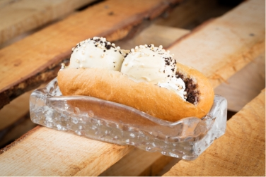

La nostra estimada illa ens ha donat magnífics pastissers i ens ha deixat magnifiques receptes
que passen de generació en generació .
A Polissó nitro ice cream ens veiem obligats a cuidar aquestes receptes centenàries com s'ha fet tota
la vida i cuidant fins al mínim detall, oli d'oliva , farina , ous de corral , llet fresca , patates de
Sa Pobla ...tots ingredients de la màxima qualitat i respectant la tradició..
Prova la nostra coca de patata , el complement perfecte per als nostres gelats...
ENSAÏMADA FREGIDA
Es podria pensar que utilitzar el nitrògen líquid per congelar el gelat que feim a Polissó és
un descobriment modern,però en realitat no és així. A finals del segle passat ja s'estava experimentant
i elaborant receptes, i amb el pas del temps ja forma part de la gastronomia actual i de Polissó,
ajudant-nos a aconseguir els nostres estimats gelats.
L'ensaïmada fregida és tan antiga com la recepta tradicional que tots coneixem, però és poc conegut i
per això estem desitjosos que li facis tast perquè no et deixarà indiferent.
Una ensaïmada cruixent simplement irresistible.
CREP-ÏMADA
Un gelat elaborat a -197 ºC amb summa cura perquè quedi el mes cremós possible i amb el sabor
perfecte. Una ensaïmada calenta i fina, torrada a l'instant són els complements perfectes per assaborir
qualsevol dia que passis pel nostre local.
Si et penses que és agradable a la vista... espera al paladar.